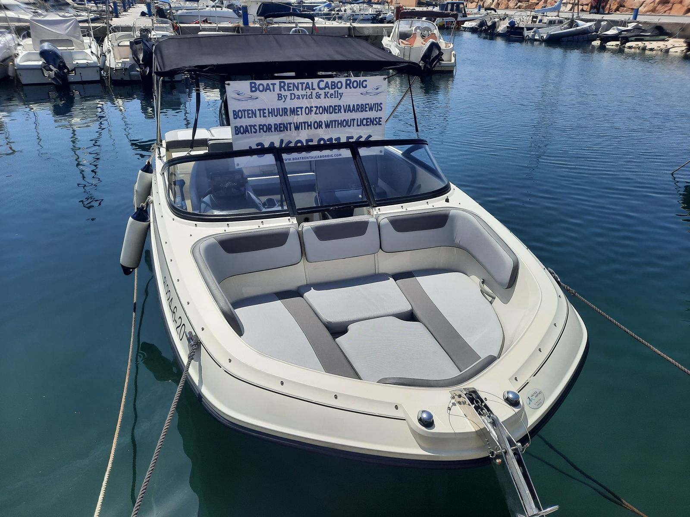
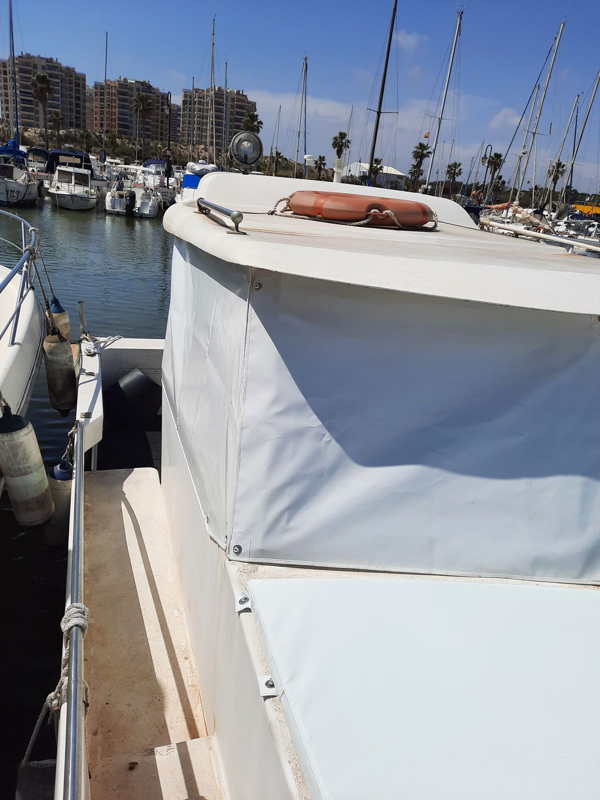
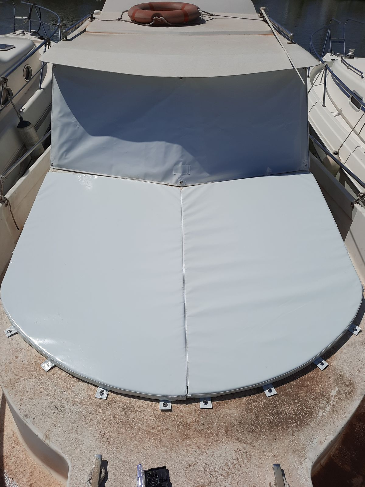
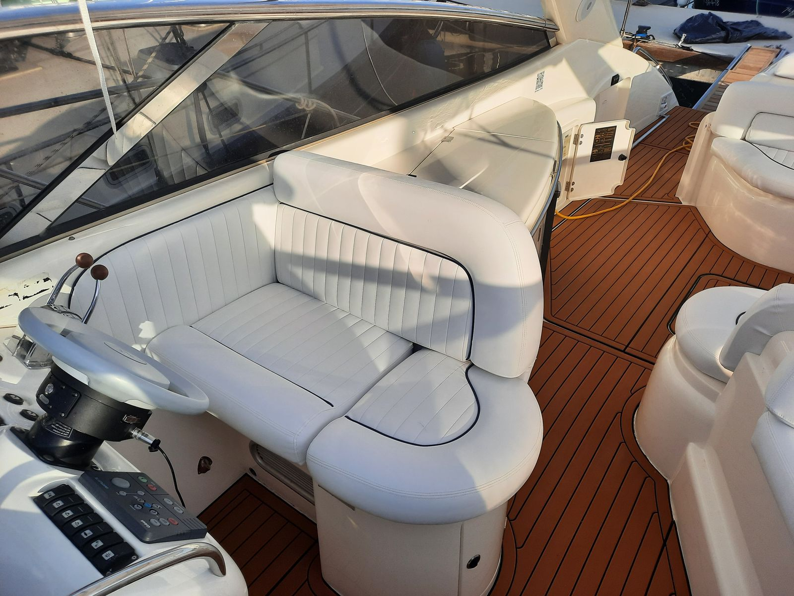
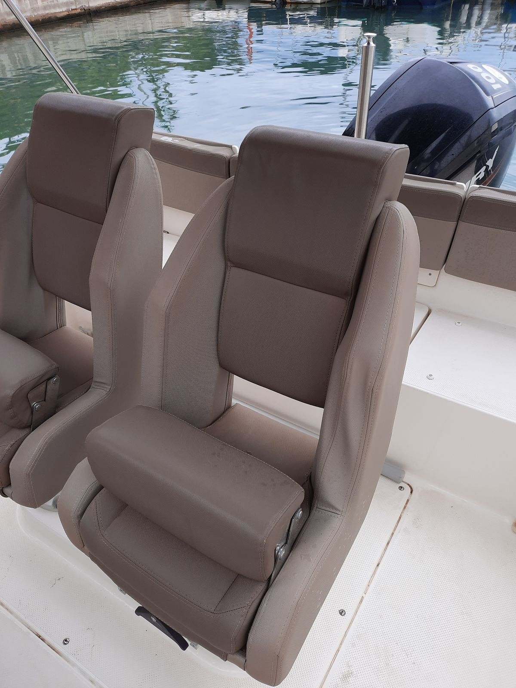
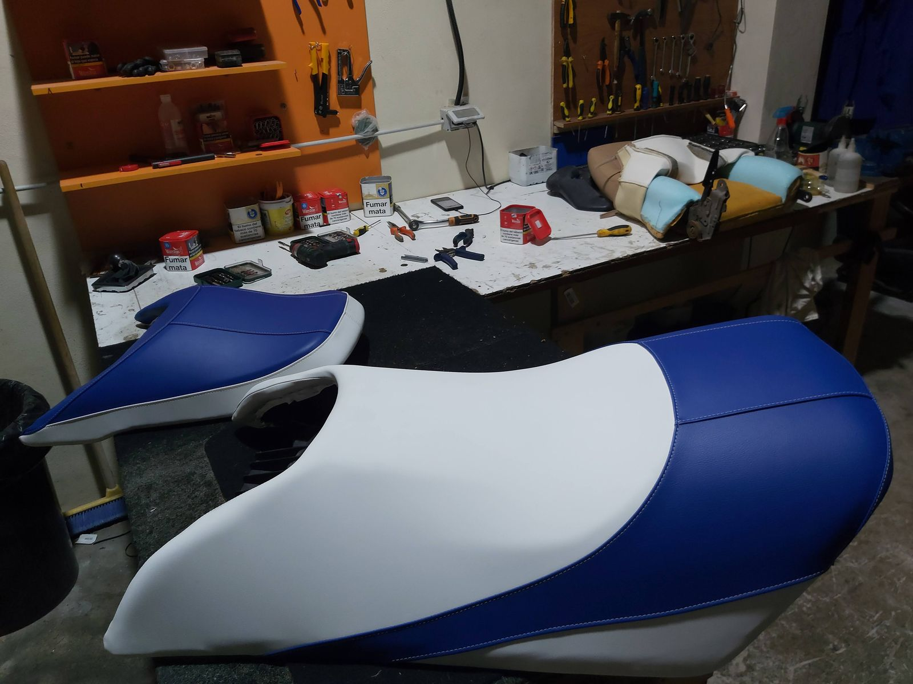

Inicio / Guardamar del Segura
Colchonetas, asientos de lancha, fundas y asientos de moto de agua para barcos de Guardamar. Es la costa más cercana a nuestro taller de Benejúzar: unos 20 minutos siguiendo el río Segura.
Guardamar es el pueblo de costa más cercano a nuestro taller. Benejúzar está río arriba, en la misma Vega Baja, así que venir a medir tu barco o a montar el trabajo es rápido y fácil de organizar.
En Guardamar hay muchas lanchas, barcos pequeños y motos de agua, a menudo guardados en remolque o en seco. Para este tipo de barco funciona muy bien traer las piezas sueltas: si los cojines o el asiento de la moto de agua se desmontan, puedes acercarlos tú mismo al taller y te ahorras esperar a que vayamos.
Si el barco pasa temporadas en el remolque, también te hacemos una funda a medida pensada para esa posición, para que el sol no estropee la tapicería nueva.
Taller en Benejúzar, a unos 20 minutos de Guardamar.
Puedes traer cojines o asientos sueltos al taller, o vamos nosotros al barco.
Lunes a viernes, de 9:30 a 18:00. Valoración gratis por vídeo en WhatsApp.






Sí. Si los cojines se desmontan, puedes traerlos a nuestro taller de Benejúzar. Avísanos antes por WhatsApp.
Sí. Medimos el barco en el remolque, en seco o en el agua.
Sí. Hacemos la funda pensando en cómo se guarda el barco.
Sí. Retapizamos el asiento con materiales náuticos y también hacemos la funda.
También trabajamos en el resto de la Vega Baja: Benejúzar, Orihuela, Almoradí, Rojales, Callosa de Segura y Pilar de la Horadada.
Enséñanos qué hay que hacer y seguimos desde ahí.